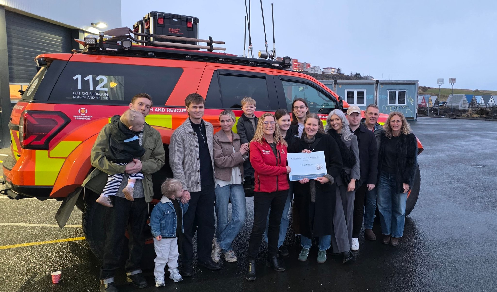
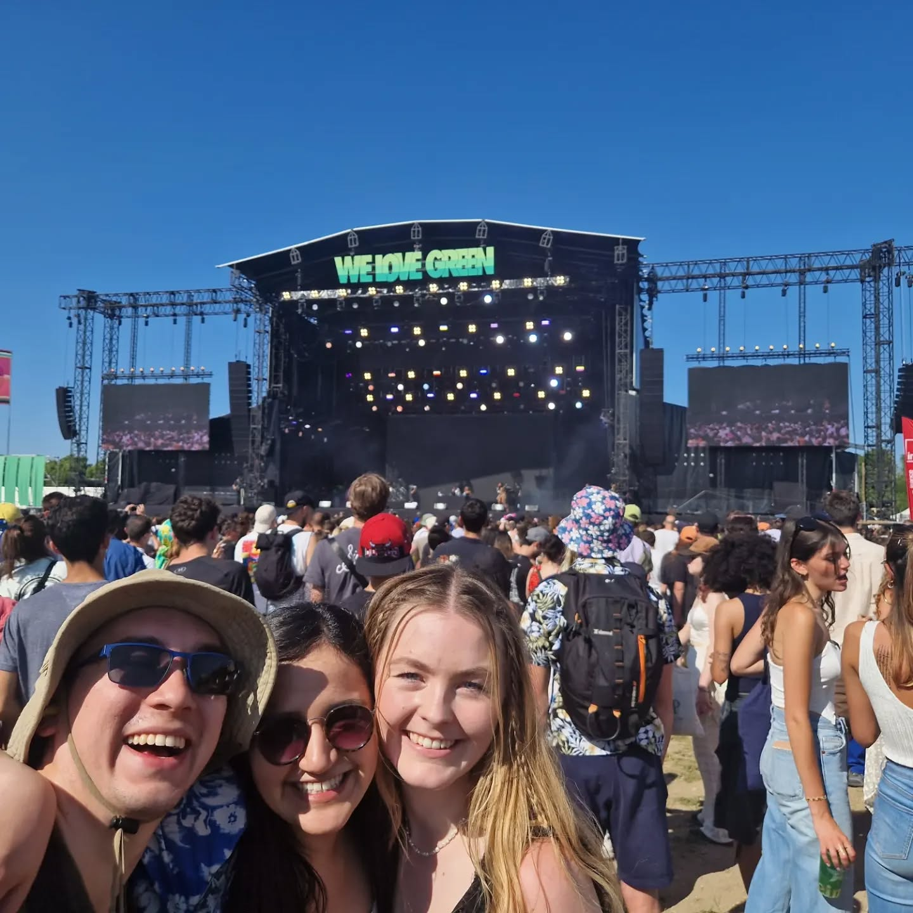
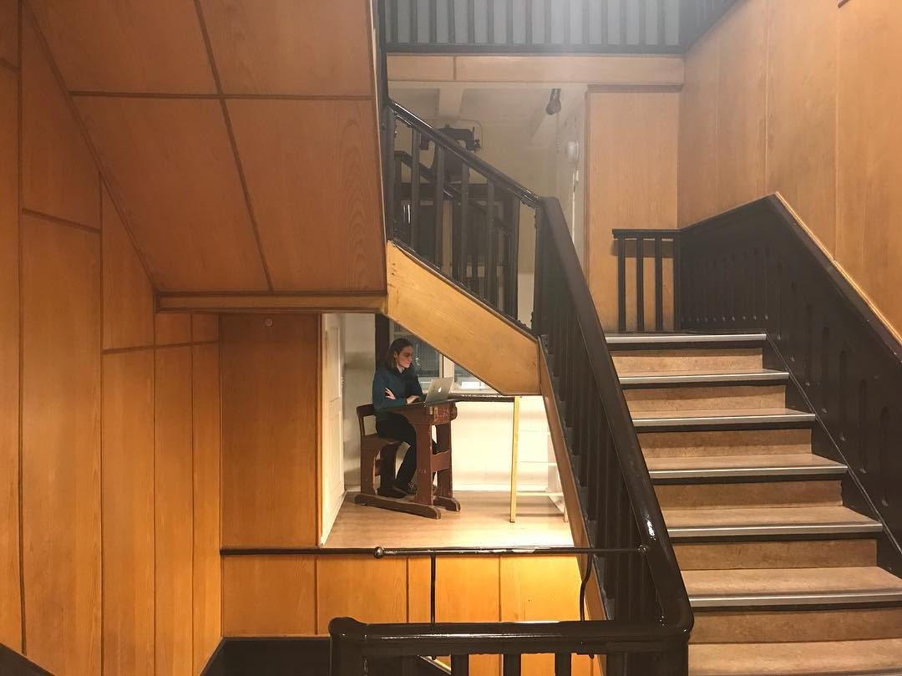
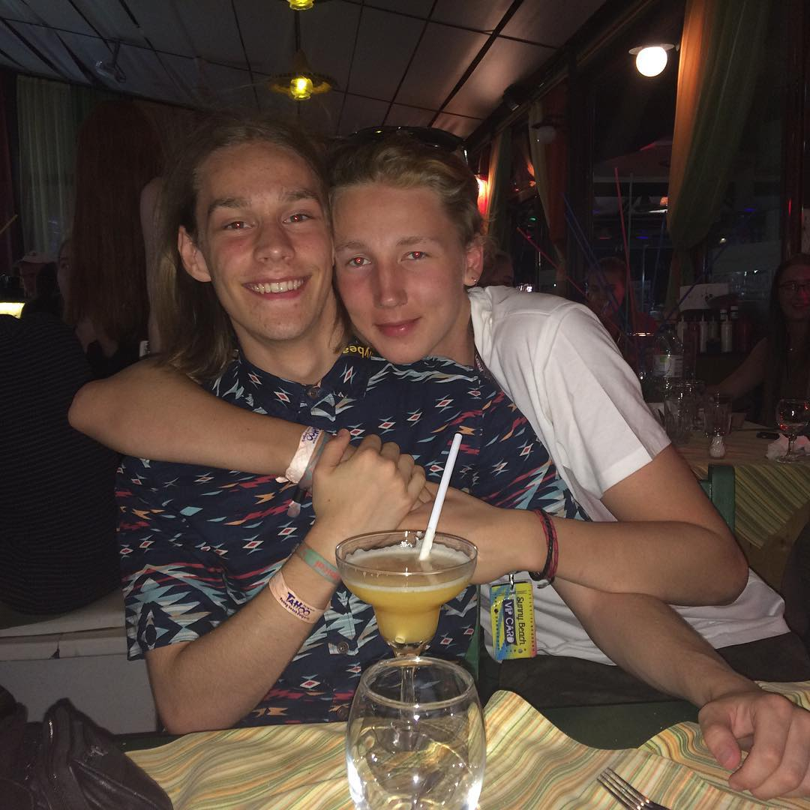
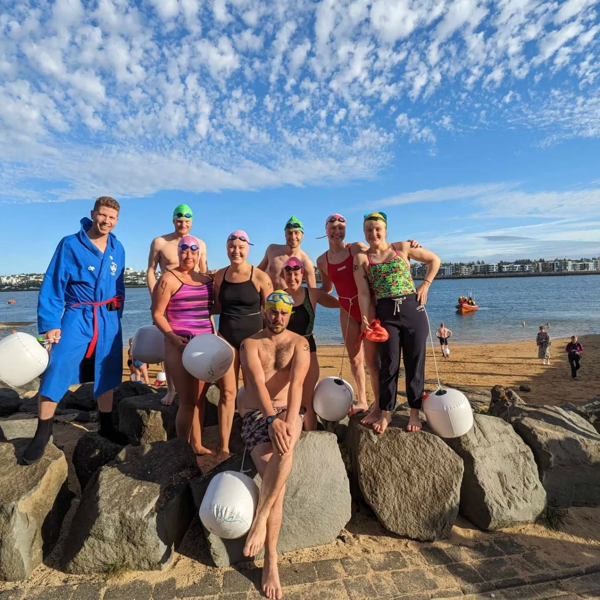

Breki og Stefanía á fimmvörðuhálsi árið 2023
Mjög skemmtileg ganga sem tók einn dag, frá Reykjavík og til baka. Í byrjun dags var mikil þoka í grennd við skógarfoss og upp jökulinn. Á niðurleið var heiðskírt og fallegt veður, alveg einstakt útsýni.
Mjög skemmtileg ganga sem tók einn dag, frá Reykjavík og til baka. Í byrjun dags var mikil þoka í grennd við skógarfoss og upp jökulinn. Á niðurleið var heiðskírt og fallegt veður, alveg einstakt útsýni.

Eiginkona mín og ég á brúðkaupsdaginn okkar.

Afhending á styrk frá fjölskyldu og vinum Sigurðar Darra Björnssonar. Sigurður Darri var félagi í Björgunarsveit Hafnarfjarðar en hann lést af slysförum við Esjuna þann 29. janúar 2020. Hlaupahópur sem samanstendur af fjölskyldu og vinum Sigurðar Darra hljóp í Reykjavíkurmaraþoni Íslandsbanka í minningu hans og til styrktar Björgunarsveitar Hafnarfjarðar. Þau söfnuðu 1.367.000 krónum fyrir björgunarsveitina.

Skíðaferð, dagurinn byrjaði á svigskíðum. Eftir hádegi var frumraun í gönguskíði. Sól og gleði allan daginn.

Mynd af mér og móður minnni.

Vinir mínir á tónlistarhátíð að sumri til.



Sesar og Breki.

Fólk sem er mér mjög kært.

Vinir sem ég kynntist í París.

Fossvogssund sigrað á fallegum degi með góðu fólki..
{kind=link}
{kind=link}
{kind=link}
{kind=link}
{kind=link}